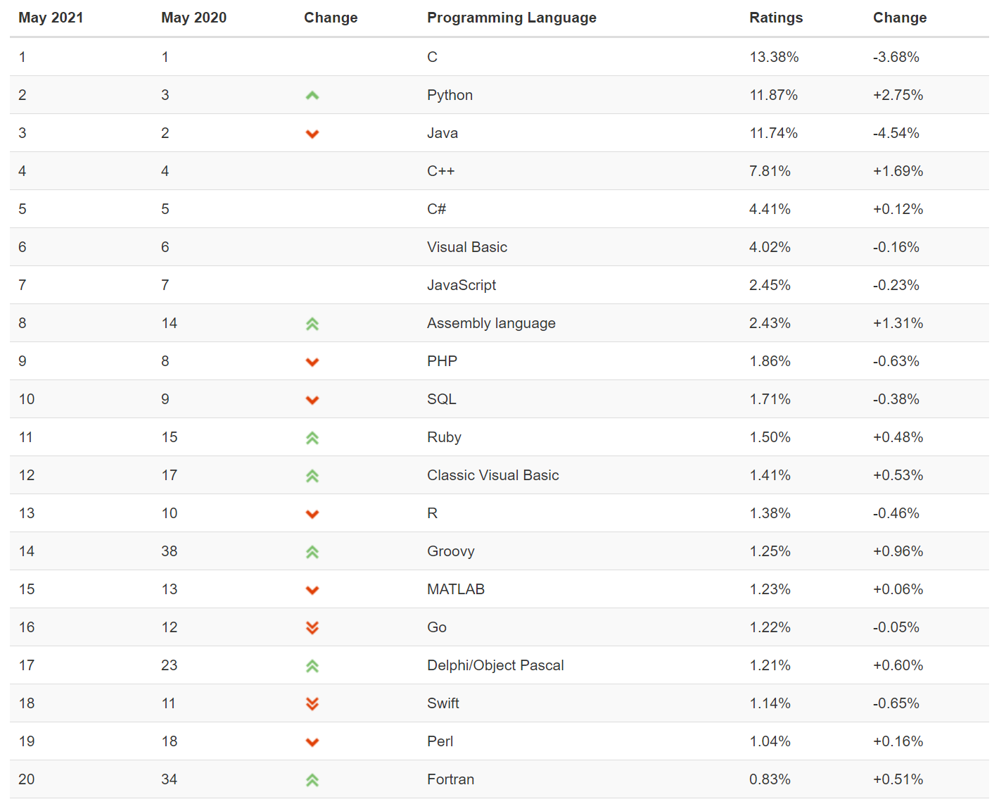
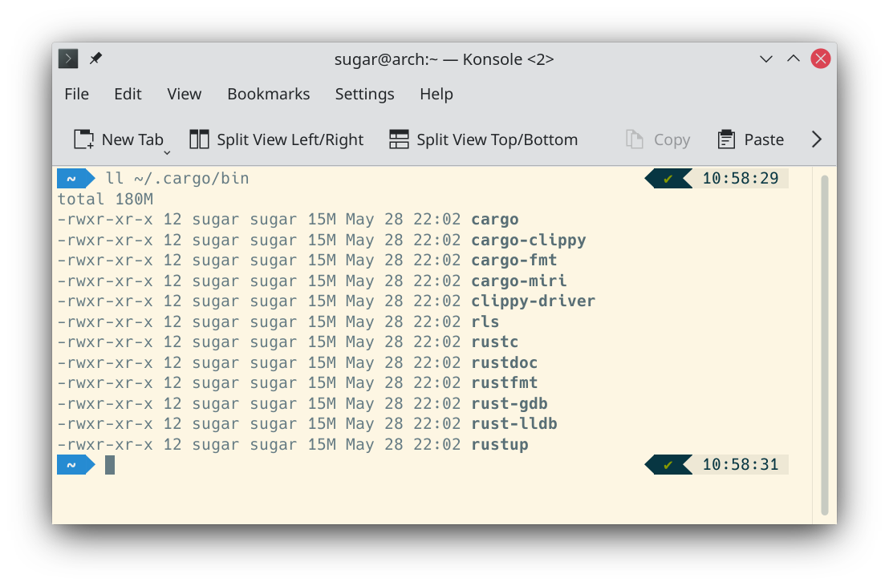
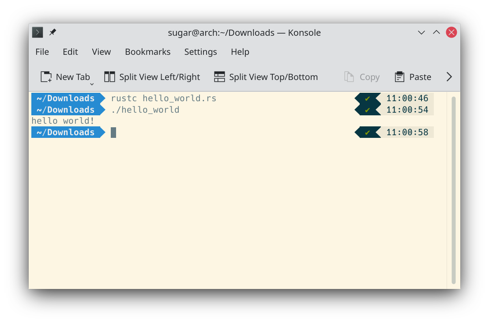

为什么选择Rust
这个世界上的编程语言不计其数，仅在 TIOBE（开发语言排行榜）上被纳入统计范围的就有273种之多，下图是当下最流行的前20种编程语言。

这些优秀的编程语言往往都有自己的绝活，例如C性能非常高，Java便于抽象擅长组织大型程序，Python适合小巧的脚本，等等。但同样，它们也并非完美，性能高的C容易产生段错误（segfault，由访问不属于本程序拥有的内存所造成的崩溃，例如空指针解引用等），擅长抽象的Java需要垃圾回收（GC），上手快的Python解释执行速度较慢。所以，编程语言的设计和发展仍有进步的空间，而Rust就是近年来涌现的新一代的综合各大编程语言优点的集大成者。
Rust的设计者是这样定位这门语言的：
Rust is a system’s programming language that runs blazingly fast, prevents segfaults, and guarantees thread safety.
Rust的突出优势可以总结为以下三点（无须看懂，知道Rust很厉害就完事了）：
- 内存安全：Rust最重要的特点就是可以提供内存安全保证，而且没有额外的性能损失。保证内存安全即不会出现内存访问错误，为此，Rust建立了严格的内存安全管理模型：
- 所有权系统：每个被分配的内存都有一个独占其所有权的指针，只有当该指针被销毁时，其对应的内存才能随之被释放。所有权系统借鉴了C++的RAII机制，这是Rust无GC但是可以安全管理内存的基石。
- 借用和生命周期：每个变量都有其生命周期，一旦超出生命周期，变量就会被自动释放。如果是借用，则可以通过标记生命周期参数供编译器检查的方式，防止出现悬垂指针，也就是释放后使用的情况。
- 零成本抽象：抽象表达能力是使用编程语言高效开发的必要条件，有些语言的抽象表达能力是靠牺牲性能换来的，而Rust的抽象表达能力不会存在运行时性能开销。Rust零成本抽象的基石是泛型和trait。
- 并发：内存安全的bug和并发安全的bug产生都是由内存的不正当访问造成的，所以，利用装载了所有权的强大类型系统，Rust能够在编译期检查出多线程并发代码中的数据竞争问题。
Rust以其独特的魅力已经连续多年荣膺StackOverflow网站最受程序员欢迎的编程语言，虽然目前其在TIOBE榜单上还未入前列，但未来互联网必定更加注重安全和高性能，所以应运而生的Rust必将大有可为。
在学习Rust的语法之前，我们先一起来了解一下Rust的周边知识。
Rust常用网站
- 官方网站：点击这里。在这里你可以找到官方教材TRPL等许多重要内容，所以探索一下此网站大有裨益。
- 编译器是开源的：点击这里。对Rust语言来说，开源社区也是语言的一部分，这是和其他商用语言的区别所在。
- 语言设计和相关讨论：点击这里。Rust每增加一个重要语言特性，都会经过标准的RFC流程，RFC文档是涵盖了语言特性的设计意图、详细设计、优缺点的完整技术方案。这对于我们学习者来说，可以通过阅读RFC来深入了解某个语言特性的来龙去脉，这将是一个极其宝贵的学习资源，有助于了解某个特性背后的原理。
- 官方开源仓库：点击这里。该网站储存了Rust社区热门的开源库。
版本和发布策略
Rust编译器的版本号采用了“语义化版本号”（Semantic Versioning）的方案，版本格式为：主版本号.次版本号.修订号，其递增规则如下：
- 主版本号：当做了不兼容的API修改
- 次版本号：当做了向下兼容的功能性新增
- 修订号：当做了向下兼容的问题修正
Rust团队维护三个发行分支：
- 开发版（nightly）：最新的功能将首先发布在此分支，供用户试用。
- 测试版（beta）：将nightly版本中验证过的功能开放给用户使用，可以看作是stable版本的预发布版本。
- 稳定版（stable）：每隔6个星期发布的稳定可靠的版本。
Rust语言每个相对复杂一点的新功能，都要经历如下步骤才算真正稳定可用：
RFC -> Nightly -> Beta -> Stable
有时一些新功能确实需要一定程度上破坏兼容性，为了最大程度上减少这些变动给用户带来的影响，Rust设计组又提出一个所谓的edition方案，目前有 2015 和 2018两种edition，我们可以设置”edition=2018”来告诉编译器我们使用的版本。
安装开发环境
根据官网的推荐，可以使用一个叫rustup的工具安装Rust相关的一整套工具链。命令如下：
curl --proto '=https' --tlsv1.2 -sSf https://sh.rustup.rs | sh
我们可以使用rustup工具管理工具链：
// 更新rustup本身
rustup self update
// 更新工具链
rustup update
也可以用它在stable/beta/nightly三种版本中轻松切换：
// 安装nightly版本的工具链
rustup install nightly
// 设置默认工具链是nightly版本
rustup default nightly
若执行下列命令能够正确输出版本号则说明Rust安装成功：
rustc --version
若安装不成功，请尝试将~/.cargo/bin加入PATH环境变量中去。
在~/.cargo/bin目录下可以找到Rust的一些常用工具，如下图所示：

- cargo：Rust的包管理器，类似于Python的pip、Node.js的npm。但cargo不仅局限于包管理，它还为Rust生态系统提供了标准的工作流，能够管理整个工作流程，从创建项目、运行单元测试和基准测试，到构建发布链接库，再到运行可执行文件，等等。
- rustc：Rust的编译器，负责将Rust源代码编译为可执行文件或其他库文件。rustc使用Rust语言开发，其输出的错误信息非常友好和详尽，远超你见过的任何一款编译器。
- rustdoc：文档生成器。
- rls和racer：为编辑器准备的代码提示工具。
- cargo-fmt和rustfmt：源代码格式化工具，有了这个，再也不用争论大括号是写在行尾还是另起一行了。
- rust-gdb和rust-lldb：调试器。
对于IDE，Rust尚没有专属的IDE，我推荐Clion+Rust插件，已经非常好用了。
Hello World
配置好了开发环境，如何能不写一个充满仪式感的Hello World程序呢？来，新建一个文件，命名为hello_world.rs，内容如下：
// hello_world.rs
fn main() {
let s = "hello world!";
println!("{}", s);
}
然后使用rustc编译它，可看到当前文件夹下生成了一个名为hello_world的可执行程序：

Rust的设计哲学
Rust是具有混合范式的“面向过程”式的编程语言，它包含了面向对象、函数式和泛型三种编程范式，其设计哲学如下：
- 内存安全为第一准则
- 注重并发安全，避免数据竞争
- 持续提升性能
- 保持语言的高度一致性
- 语言必须有可见的实用性
- 注重开发体验和学习体验
- 现代化语言特性
- 拥抱开源社区
学习Rust的建议
这些建议来自于张汉东老师，我认为还是十分中肯的，所以列在此处和大家分享。
- 从整体出发，不要让自己陷入到细节中去。先有高屋建瓴的结构性的认知，再深入语法细节，有利于建立知识网络，可以事半功倍。
- 抛弃一次性学会的念头，分层次递进式学习。
- 和你已知的知识建立联系。新语言新特性出现的本质原因是为了解决某个问题，因此，当我们学习Rust的新特性时，可以和其他语言的旧特性进行对比，了解其改进的动机和方式，这有助于增强对语法的记忆和理解。
- 学会阅读源码，从源码中学习。建议在学习语法时，顺带阅读源码。
- 通过主题式阅读来填补知识空白。可以从其他语言的相同特性中了解语法的概念，观察不同语言对同一概念的不同实现方式，
- 时刻把握Rust设计哲学。我们要从Rust的设计哲学去思考某种特性这样设计的原因。
- 有意识地构建Rust的心智模型，有意识地训练以Rust的方法思考代码编写的方式。
参考文献
- 《Rust编程之道》张汉东
- 《深入浅出Rust》范长春